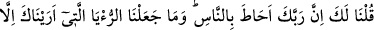
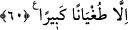

RABBİN İNSANLARI
ÇEPEÇEVRE KUŞATMIŞTIR
59. Bizi, âyetler (mûcizeler) göndermekten alıkoyan tek şey, öncekilerin bu
âyetleri yalanlamış olmasıdır. Nitekim Semûd kavmine, açık bir mûcize olmak
üzere bir dişi deve vermiştik. Onlar ise, (bu deveyi boğazladılar ve) bu yüzden
zalim oldular. Oysa biz âyetleri ancak korkutmak için göndeririz.
60. Hani sana: Rabbin, insanları çepeçevre kuşatmıştır, demiştik. Sana
gösterdiğimiz rüyayı ve Kur’an’da lânetlenen ağacı, ancak insanları sınamak için
meydana getirdik. Biz onları korkuturuz da, bu onlara, büyük bir azgınlıktan başka
bir şey sağlamaz.
“Bizi” Kureyşliler’in teklif ettiği; ölüleri diriltmek, Safâ tepesini altına dönüştürmek,
mekânın genişlemesi ve zirâata elverişli hâle gelmesi için Mekke’nin dağlarını ortadan
kaldırmak, bahçelerin oluşması için nehirler akıtmak gibi “âyetler” mîcizeler
“göndermekten alıkoyan tek şey” tabiat bakımından Kureyşlilerin benzeri olan Âd ve
Semûd gibi “öncekilerin” daha önceki kavimlerin “bu âyetleri” bu nevi mûcizeleri
“yalanlamış olmasıdır.” Başka bir şey bizi bundan alıkoymamıştır. Eğer bu mûcizeler
gönderilmiş olsaydı Kureyşliler de Âd ve Semûd’un inkâr ettiği gibi inkârda
bulunacaklardı. Dolayısıyla daha önceki sünnetimizde olduğu gibi toptan helâki hak
edeceklerdi. Halbuki biz onları toptan helâk etmeyeceğimize hükmettik. Çünkü onların
içinde mü’minler veya îman edecekleri dünyaya getirecekler vardır.
Sonra Allah Teâlâ, kendilerine gösterilen mûcizeleri inkâr ettiği için helâk olan bazı
kavimleri zikretti ve şöyle buyurdu: “Nitekim Semûd kavmine, açık bir mûcize olmak
üzere bir dişi deve vermiştik. Onlar ise, (bu deveyi boğazladılar ve) bu yüzden zalim
oldular.” Âyetin bu cümlesi daha önceki cümleye atıftır. Sanki şöyle denilmiştir: ‘Bizi
mûcizeler göndermekten daha öncekilerin onları yalanlamış olmaları alıkoymuştur.
Çünkü biz onlara teklif ettikleri apaçık mûcizeleri gösterdik, fakat onlar yalanladılar.
Semûd kavmine de istekleri üzerine deveyi mûcize olarak verdik. Onlar da zâlimler